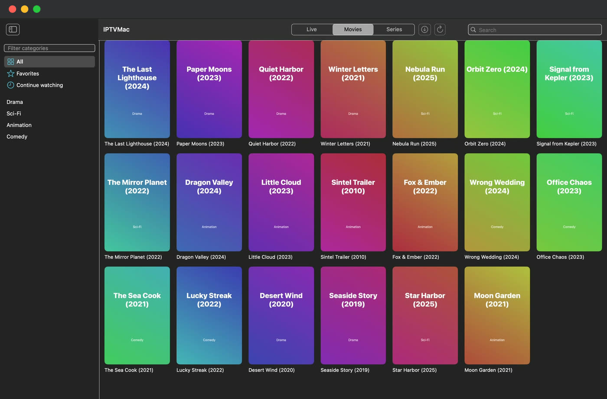

DownloadIPTVMacfor free.
One free player for your Mac, your PC, your phone and your TV. Pick your device; the app contains no ads and no tracking.



- Free
- Open source, GPL-3.0
- No account
- No ads
- No tracking
- 31 languages
- Xtream Codes and M3U
- Mac, Windows, Android, Android TV
- Powered by mpv
- Picture in Picture
Choose your screen.
The file, three steps and what to expect, for each device.
- MacApple Silicon
- WindowsWindows 10 and 11
- Phone and tabletAndroid 8+
- TVAndroid TV, Google TV, Fire TV
- iPhone and iPadApp Store

Mac
Apple Silicon (M1 or later), macOS 14 or later.
Or install from Terminal in one line:
curl -fsSL https://raw.githubusercontent.com/Goelir/IPTVMac/main/install.sh | bash - Open IPTVMac.dmg and drag the IPTVMac icon onto Applications.
- Open the app and add your Xtream Codes login or M3U link.
- That is all: the app updates itself.
Signed with an Apple Developer ID and notarized by Apple, so it opens with a normal double-click. The one-line command works for every version and checks the signature and SHA-256 for you.

Windows
Windows 10 or 11, 64-bit.
Or the portable zip (no install, unzip and run): IPTVMac-Windows-1.0.4-portable.zip (39 MB)
- Open IPTVMac-Windows-setup.exe. It installs for your user only and needs no administrator rights.
- Windows may say it protected your PC: the app is not signed with a paid certificate yet. Choose More info, then Run anyway.
- Open IPTVMac and add your Xtream Codes login or M3U link. Space pauses, the arrows seek, F fills the screen.
Light by design: about 27 MB to download, and while it just sits open it uses almost no processor. Updates are manual for now: the app tells you when a new version is out, and you run the new installer over the old one.
Android phone and tablet
Android 8 or later.
Other files: armeabi-v7a (38 MB) · x86_64 (46 MB)
- Download the file on the phone and open it.
- Android asks to allow installs from your browser or Files app: allow it. If Play Protect warns about an app from outside the Play Store, choose Install anyway.
- Add your source. A banner tells you when a new version is out: tap Update now and the app downloads and installs it (Android asks you to confirm), and your data stays.
Not on the Play Store yet, so the install is a direct file. It is signed with the project's own key.
Android TV, Google TV, Fire TV
Android 8 or later. Works with the remote control; no touch screen needed.
https://github.com/Goelir/IPTVMac/releases/download/android-v1.0.7/IPTVMac-Android-1.0.7-tv-32bit.apk
- On the TV, install the Downloader app and open it.
- Type the address of the file, or copy the file to a USB stick and open it with a file manager. Try the 32-bit file first; if the TV says it is not compatible, use the 64-bit one.
- Allow Downloader to install apps, then install and open IPTVMac. OK selects, Back goes up one level, and holding Back closes the app.
Installs directly for now (no store listing yet). Updates are manual: install the new file over the old one. There are no downloads or backup files on the TV version.
iPhone and iPad
iOS 17 or later.
Completely free: no ads, no subscription, no in-app purchases and no account. 31 languages. Needs iOS 17 or later. The source is also here if you want to build it yourself.
Which Android file?
Phones and tablets use one of the first three. TVs use the TV files. If unsure, take the one marked as the usual choice.
| File | For | Size |
|---|---|---|
arm64-v8a | Almost every phone and tablet made since 2017. The usual choice. | 41 MB |
armeabi-v7a | Older 32-bit phones and tablets. | 38 MB |
x86_64 | Emulators and some Chromebooks. | 46 MB |
tv-32bit | TVs and boxes: runs on almost all of them, including most Fire TV sticks. | 38 MB |
tv-64bit | TVs and boxes that need a 64-bit app (try it if 32-bit is refused). | 41 MB |
App Store or GitHub?
The iPhone and iPad app is on the App Store, and its full source code is on GitHub. It is the same app; these are the differences.
| App Store | Built from GitHub | |
|---|---|---|
| Install | One tap in the App Store. | You build it: a Mac with Xcode, then scripts/ios-setup.sh, then run it on your iPhone or iPad (see docs/PLATFORMS.md). |
| Updates | Automatic, through the App Store, after Apple has reviewed each version. | When you choose: download the newest source and build again. GitHub is usually a little ahead of the App Store. |
| Signing | The project's own Apple developer account. | Your own Apple ID. With a free Apple account the app runs for 7 days and you install it again; a paid account lasts a year. |
| What is inside | The same code as on GitHub. No ads, no tracking, no purchases. | The same code. No ads, no tracking, no purchases. |
| Price | Free. | Free (GPL-3.0). |
Mac, Windows, Android and Android TV are not in an app store: the files on GitHub are the only versions. The Mac and Android apps update themselves from GitHub.
Check what you downloaded
Every Android release lists the SHA-256 of each file in SHA256SUMS.txt, and the Mac release lists the SHA-256 of IPTVMac.dmg in its notes. Compare them with shasum -a 256 <file> on a Mac or Linux, or certutil -hashfile <file> SHA256 on Windows.
The Mac app is notarized by Apple (an automated malware scan, not a review of the app). In-app updates on the Mac are verified with a signature before they are installed.
Older versions and source
Every release stays on GitHub. IPTVMac is open source under GPL-3.0, so you can read the code or build it yourself.
All releases on GitHubSource codeWhat is new in this version
Need a hand?
Step-by-step guides, and a support page that never asks for your login.
IPTVMac is only a player. It includes no channels or content: use it with a source you are authorized to access.